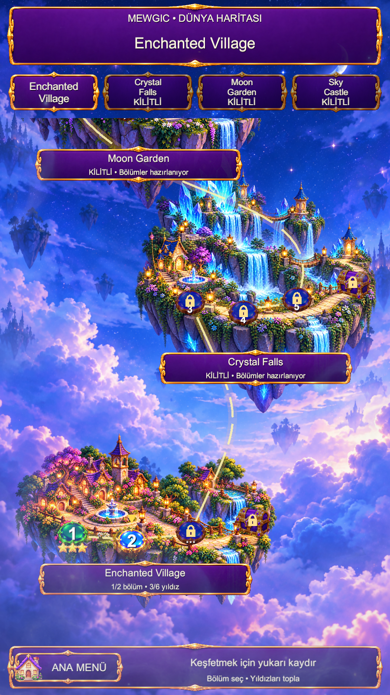
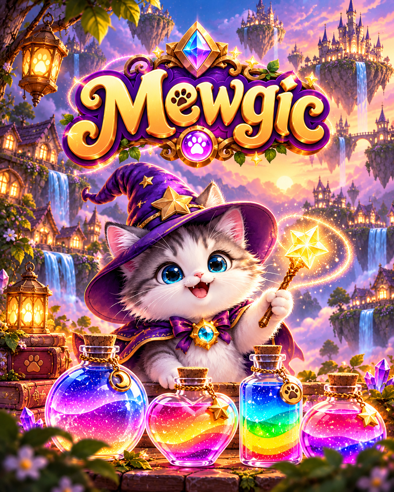
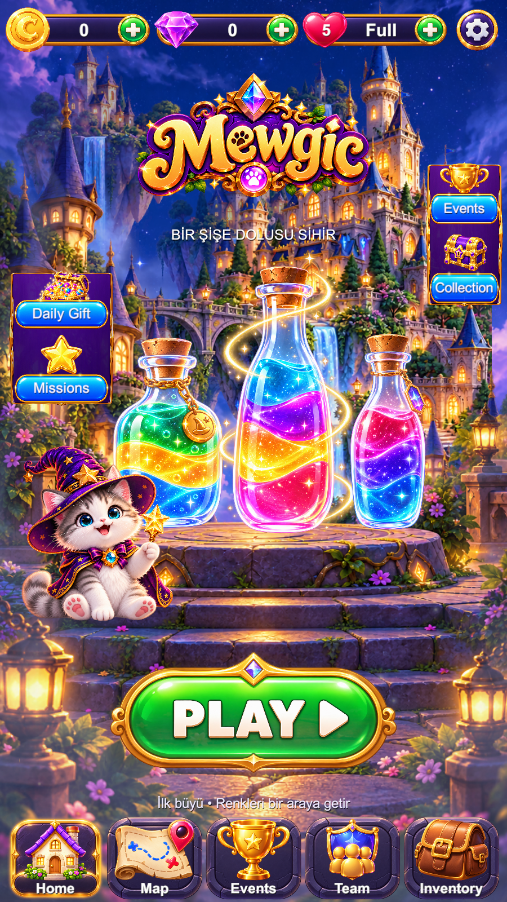
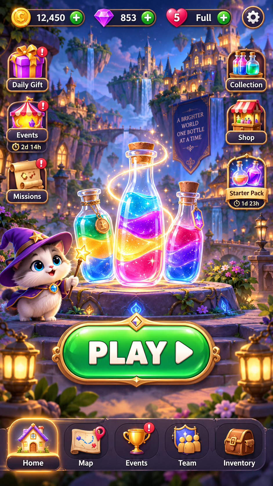
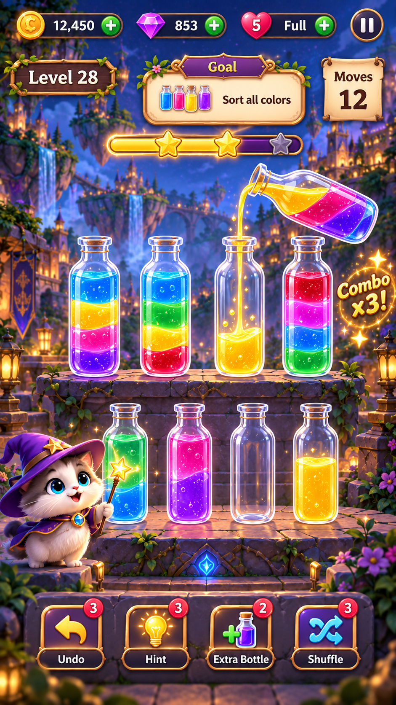
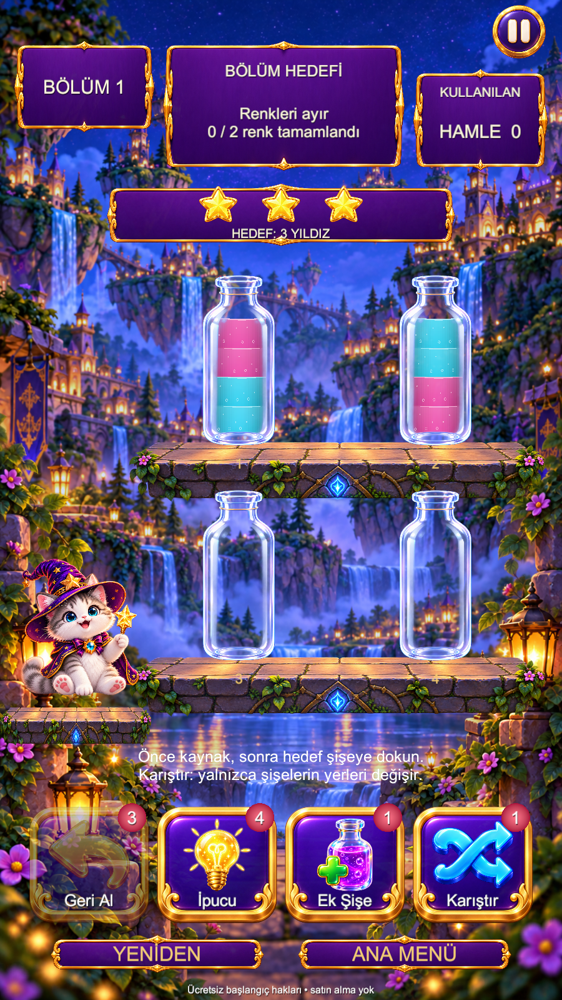
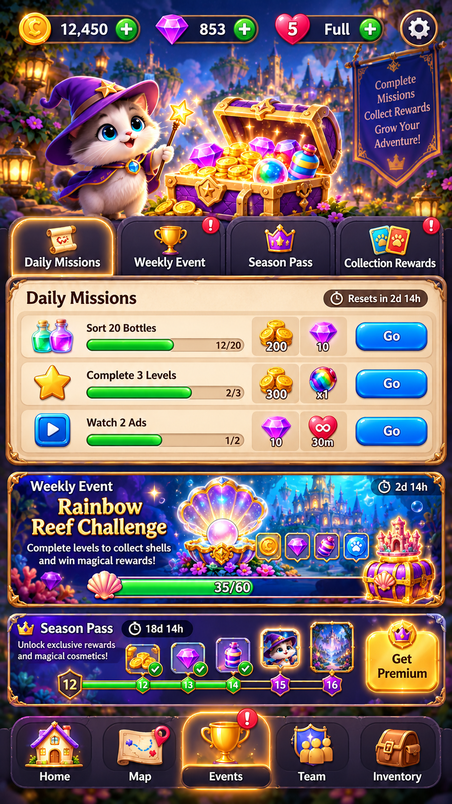
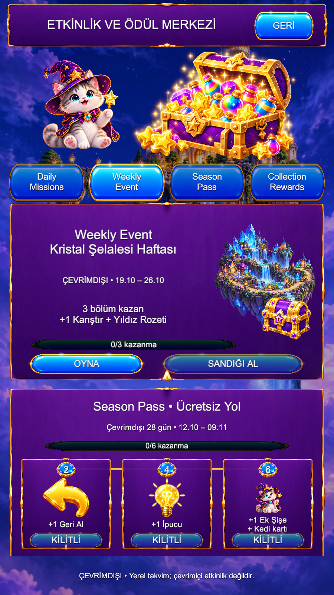

03_Map.png
Harita: daha seyrek dört bölge; yalnız1–2 oynanabilir. Üst ekonomi/yan etkinlik/kedi yok; kilitler gerçektir.


Sağdaki görüntüler bu aşamada Unity ScreenCapture ile900×1600 Game View üzerinden alındı. İzole test profili; fiziksel telefon görüntüsü değildir.
Kapak kimliği / gerçek Home: logo ve kedi pozu birebir değil; onaylı varlıklar korunur.


Home: mimari, oturan kedi, ek logo, dört yan giriş ve ayrı navigasyon kartları farklıdır. Shop/Starter Pack yok.

Gameplay: iki renkli dört şişelik gerçek ilk bölüm; HUD mor panel, sıvı sanatı daha sade. Örnek Level28/Moves12 kullanılmaz.


Harita: daha seyrek dört bölge; yalnız1–2 oynanabilir. Üst ekonomi/yan etkinlik/kedi yok; kilitler gerçektir.

Etkinlik: yerel Crystal Falls haftası, üç ücretsiz sezon basamağı, iki kart. Rainbow Reef/premium ödeme yok.

